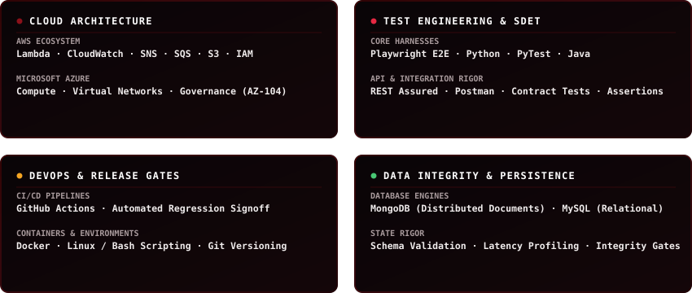
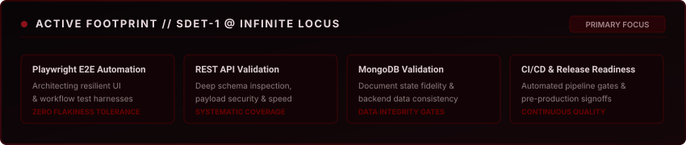
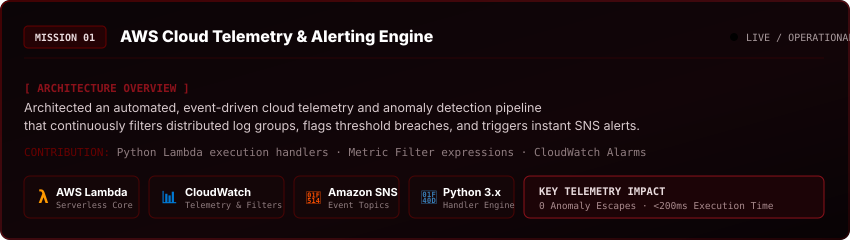
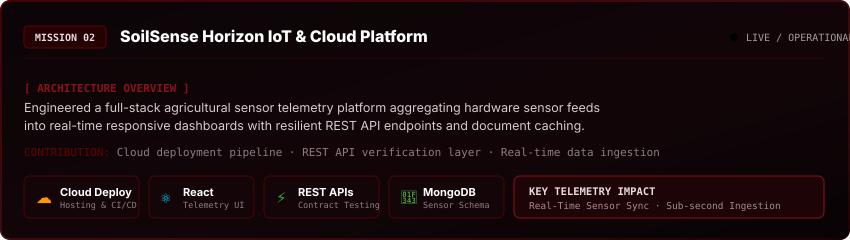
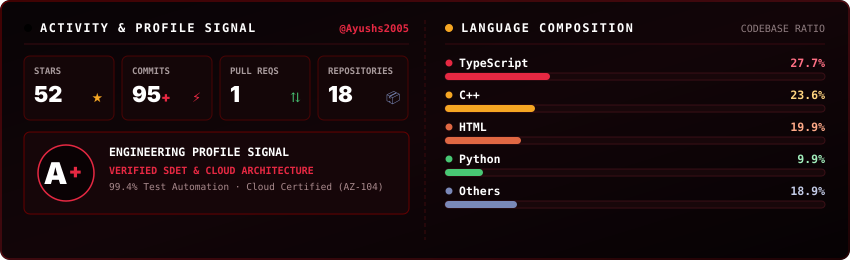

"Architecting high-resilience cloud infrastructure and automated quality harnesses where distributed systems meet continuous reliability."
I work on the parts of distributed systems and quality engineering that make or break production: deterministic Playwright test automation, serverless cloud telemetry, REST API contract verification, and automated CI/CD release readiness across AWS and Microsoft Azure.





